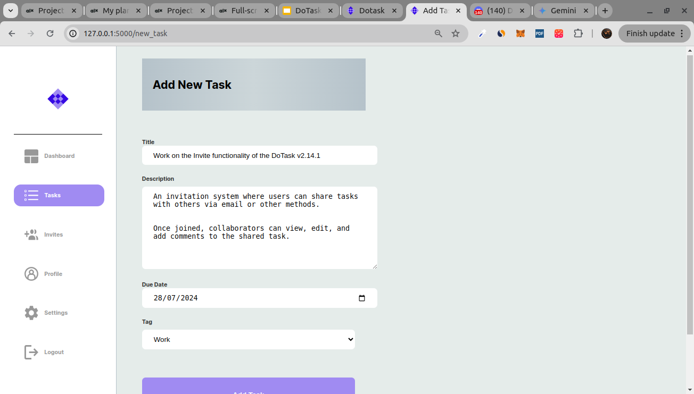
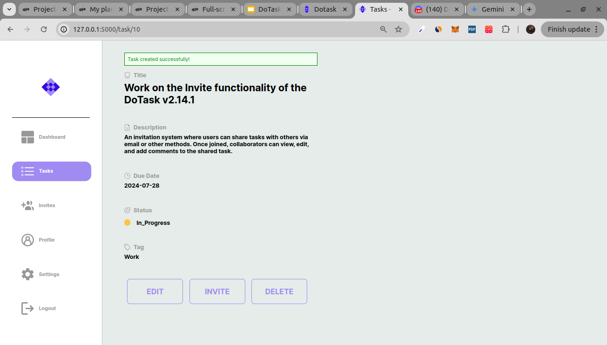
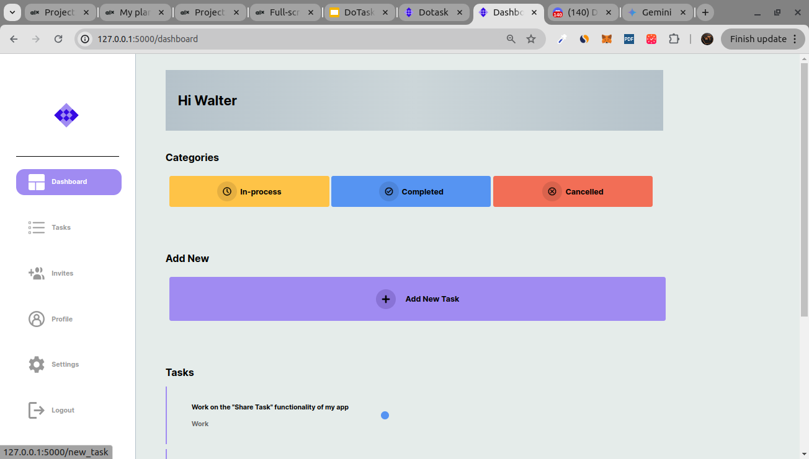
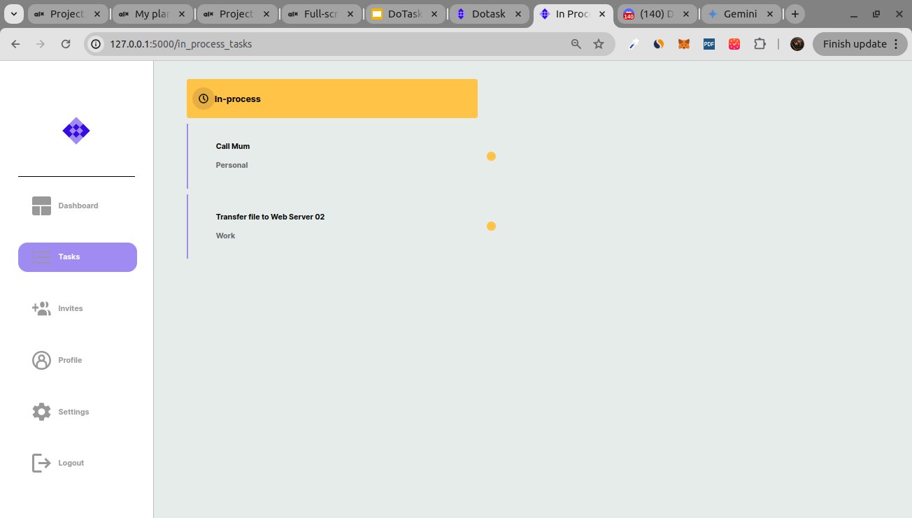
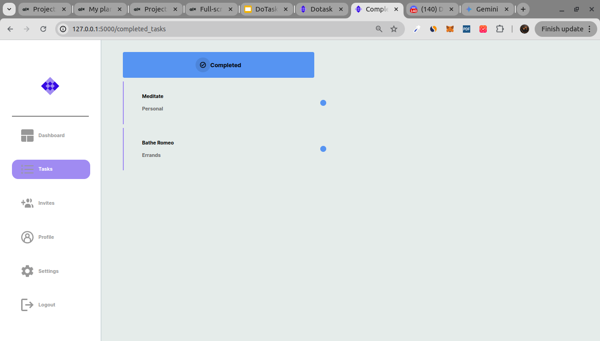
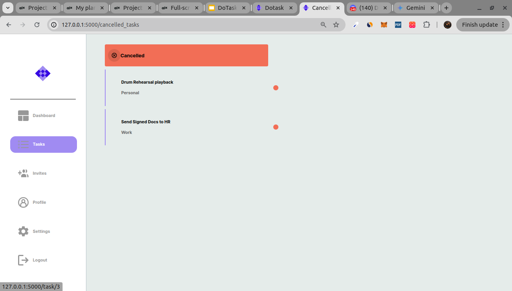
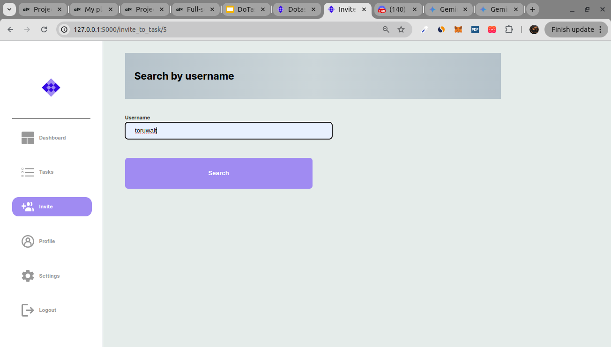
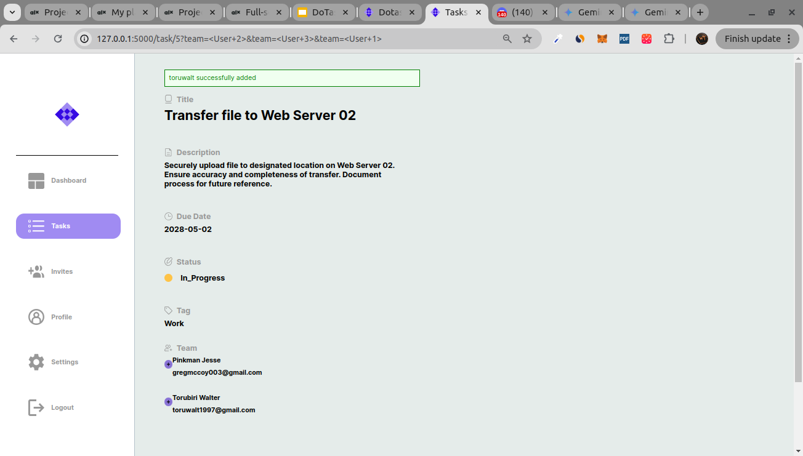
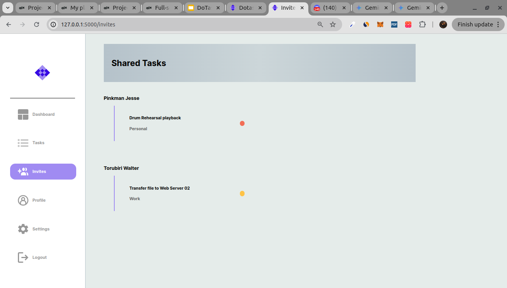

1. Task Creation


DoTask's intuitive interface makes creating and managing tasks a breeze. Simply add a new task, provide a clear description, and set a due date if needed.
Your tasks are then displayed in a clear and organized list, allowing you to easily prioritize and stay on top of your workload.
2. Task Categorization by Status




DoTask goes beyond simple task creation by offering an automatic categorization system. This update introduces a visual and functional way to organize your tasks based on their current status:
In Process (Yellow):
Tasks that are currently being worked on. These will be prominently displayed to keep you focused on your active projects.
Completed (Blue):
Tasks that have been successfully finished. Easily identify completed tasks for a sense of accomplishment and track your overall progress.
Cancelled (Red):
Tasks that are no longer relevant and have been discontinued. Quickly remove clutter and maintain a clear view of your active workload.
3. Task Sharing/Invitation to Task


